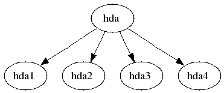
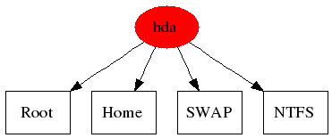

Graphviz
Dieser Artikel wurde für die folgenden Ubuntu-Versionen getestet:
Ubuntu 16.04 Xenial Xerus
Ubuntu 14.04 Trusty Tahr
Zum Verständnis dieses Artikels sind folgende Seiten hilfreich:
Graphviz  ist eine kleine Programmsammlung, mit der sich sehr einfach und sehr schnell Graphen in Form von Baumstrukturen oder Beziehungsdiagrammen erstellen lassen.
ist eine kleine Programmsammlung, mit der sich sehr einfach und sehr schnell Graphen in Form von Baumstrukturen oder Beziehungsdiagrammen erstellen lassen.
Als Alternative zu Graphviz kann das Java-basierende, mit einer grafischen Oberfläche ausgestattete Programm yEd dienen.
Installation¶
Graphviz liegt als Paket für Ubuntu in den offiziellen Paketquellen vor [1]:
graphviz
 mit apturl
mit apturl
Paketliste zum Kopieren:
sudo apt-get install graphviz
sudo aptitude install graphviz
Nutzung¶
Die Nutzung von Graphviz läuft in zwei Schritten ab:
Der zu zeichnende Graph wird mit Hilfe der recht einfachen Skriptsprache / Beschreibungssprache namens "DOT" beschrieben.
Im Terminal wird mit Hilfe eines einfachen Programmaufrufes aus der Skriptdatei eine Grafik erstellt.
Beschreibung des Graphen¶
Die Textdatei, die den Graphen beschreibt, lässt sich mit jedem beliebigen Editor erstellen. Die Datei benötigt keine Dateiendung.
Ein Graph besteht grundsätzlich nur aus zwei Elementen:
Knoten (engl. "nodes") - diese enthalten die darzustellenden Elemente
Kanten (engl. "edges") - diese verbinden die einzelnen Knoten
Graphviz kennt dabei zwei verschiedene Arten von Graphen:
gerichtete Graphen, d.h. die Knoten stehen in einer bestimmten Beziehung zueinander, die Kanten werden als Pfeile dargestellt.
ungerichtete Graphen, d.h. die Knoten stehen in keiner bestimmten Beziehung zueinander, die Kanten werden als Linien dargestellt.
Weiterhin können Knoten auch zu Gruppen zusammengefasst werden.
Für die Knoten und Kanten bestehen verschiedene optische Darstellungsmöglichkeiten, wie z.B.:
Knoten: Form des Knoten (rund, eckig, rautenförmig, ...), farbig oder nicht farbig hinterlegt, außerdem kann der Knoten noch intern unterteilt werden
Linien: fett, farbig, mit Beschriftung, etc.
Eine vollständige Übersicht gibt es auf der Homepage von Graphviz.
Darstellung des Graphen¶
Um den Graphen darzustellen, öffnet man ein Terminal [2] und gibt folgenden Befehl ein:
# Allgemein dot -T<Grafikformat> <Eingabedatei> -o <Ausgabedatei> # Beispiel dot -Tpng daten.gv -o graph.png
Die Angaben -T und -o sind dabei Pflicht, keine Optionen!
Graphviz kennt verschiedenene Grafikformate wie png, jpg, gif, svg und ps. Alle aktuell unterstützten Formate kann man per dot -Txxx herausfinden.
Hinweis:
Zwischen -T und dem Grafikformat darf keine Leerstelle stehen. Möchte man z.B. eine png-Datei erzeugen, so ist die korrekt Angabe -Tpng (siehe Beispiel).
Die <Eingabedatei> enthält die Beschreibung des Graphen, der Name der Ausgabedatei kann frei gewählt werden.
Hinweis:
Graphviz ergänzt nicht automatisch die richtige Dateiendung, diese muss mit dem Namen des Graphen eingegeben werden, also z.B. graph.png (siehe Beispiel).
Der im obige Aufruf genannte Befehl "dot" ist dabei das Programm, welches aus der Beschreibungsdatei den Graphen erstellt. Graphviz kennt aber noch andere Programme für diesen Zweck, wobei die Darstellung des Graphen dann variiert, siehe auch Abschnitt Beispiele.
| Programme zum Erstellen von Graphen | |
| Name | Aussehen des Graph |
| dot | Hierarchische Struktur, speziell für gerichtete Graphen. |
| neato | Kreisförmig Darstellung, für ungerichtete Graphen. |
| twopi | Kreisförmig Darstellung, für ungerichtete Graphen. |
| circo | Halbkreisförmig Darstellung, für ungerichtete Graphen. |
Eine detaillierte Beschreibung findet man in der Online-Dokumentation zu Graphiz. Ein deutsches Tutorial findet man hier  .
.
Beispiele¶
Was sich in der Beschreibung vielleicht relativ komplex anhört, ist in der Nutzung hingegen recht einfach, wie die folgenden Beispiele zeigen. Alle Beispiele führen auch in die Beschreibungssprache DOT ein. Als Beispiel wird dabei die Aufteilung einer Festplatte hda verwendet.
Auf der Homepage von Graphiz gibt es noch eine Vielzahl von weiteren Beispielen in Form von (teilweise recht komplexen) Graphen und den zugehörigen Beschreibungsdateien.
Gerichtete Graphen¶
Beispiel 1¶
Das erste Beispiel zeigt die einfachste Form einer Beschreibung:
digraph G {
hda -> hda1;
hda -> hda2;
hda -> hda3;
hda -> hda4;
}Die Beschreibung des Graphen wird mit "digraph" eingeleitet, "G" ist der Name des Graphen, dieser kann beliebig gewählt werden. Die eigentliche Beschreibung wird in geschweifte Klammern eingeschlossen. Jede Zeile sollte (muss aber nicht) mit einen Semikolon abgeschlossen werden.
In diesem Beispiel werden keine Knoten definiert; es reicht, die Beziehung der Knoten untereinander zu definieren.
Der mit "dot" erzeugte Graph sieht so aus:

Beispiel 2¶
Im zweiten Beispiel werden die Knoten definiert und mit einer Bezeichnung (Label) versehen, zusätzlich wird der Knoten "hda" mit einem roten Hintergrund und die vier "Unterknoten" eckig dargestellt:
digraph G {
hda [style=filled, color="red", label="hda"]
/*Unterknoten eckig darstellen*/
node [shape=box]
hda1 [label="Root"]
hda2 [label="Home"]
hda3 [label="SWAP"]
hda4 [label="NTFS"]
hda -> hda1;
hda -> hda2;
hda -> hda3;
hda -> hda4;
}Der entsprechende Graph sieht so aus:

Wie man sieht, wird nun die Bezeichnung anstelle des Namens des Knotens angezeigt. Der Befehl "node" definiert dabei die Darstellungsart des Knotens und bezieht sich auf alle in Skript folgenden Knoten.
Wie man im Listing auch sieht, werden Kommentare zwischen /* ... */ eingeschlossen.
Beispiel 3¶
Im dritten Beispiel werden die Knoten hda1, hda2 und hda3 zu einer Gruppe mit dem Namen "Linux" zusammengefasst, die Kante von hda zu hda4 wird zusätzlich fett und blau dargestellt und auch beschriftet:
digraph G {
hda [style=filled, color="red", label="hda"]
node [shape=box];
subgraph cluster_linux {
style=filled;
color=grey;
label="Linux";
hda1 [label="Root"]
hda2 [label="Home"]
hda3 [label="SWAP"]
}
hda4 [label="NTFS"];
hda -> hda1;
hda -> hda2;
hda -> hda3;
hda -> hda4 [style="bold", color="blue", label="mount read-only"];
}Das Ergebnis sieht so aus:
Wie man sieht, wird in diesem Beispiel eine Gruppe mit "subgraph cluster_linux" erzeugt, wobei der Name nicht beliebig gewählt werden kann. Der Name muss immer mit dem Wort "cluster" beginnen. Danach folgt der individuelle Name des Clusters (der Unterstrich gehört in diesem Beispiel schon dazu; es ist rein optional und dient nicht zur Trennung!). Die allgemeine Syntax lautet also: cluster"name", wobei "name" frei gewählt werden kann.
Die Gruppe wird ebenfalls von geschweiften Klammern eingeschlossen.
Beispiel 4¶
Hier werden die Knoten in drei Teile unterteilt, so dass zusätzliche Beschriftungen möglich ist.
digraph G {
node [shape=record];
hda [ label="40 GB | hda | "];
hda1 [ label="10 GB | Root | hda1" ];
hda2 [ label="14 GB | Home | hda2" ];
hda3 [ label="1 GB | SWAP | hda3" ];
hda4 [ label="15 GB | NTFS | hda4" ];
hda -> hda1;
hda -> hda2;
hda -> hda3;
hda -> hda4;
}Das Ergebnis sieht so aus:
Die Unterteilung erfolgt mit Hilfe des Pipe-Zeichens |, wobei zusätzlich die eckigen Klammern gesetzt werden müssen.
Ungerichtete Graphen¶
Im folgenden als Beispiel ein ungerichteter Graph, welcher inhaltlich dem ersten Beispiel der gerichteten Graphen entspricht.
graph G {
hda -- hda1;
hda -- hda2;
hda -- hda3;
hda -- hda4;
}Wie man sieht, bestehen zwei Hauptunterschiede: Die Datei wird mit "graph" (anstatt "digraph") eingeleitet, die Kanten werden mit "--" (anstatt "->") definiert. Ansonsten gelten alle unter "Gerichtete Graphen" gezeigten Formatierungsmöglichkeiten auch für ungerichtete Graphen.
Je nach gewähltem Programm kann das Aussehen des oben beschriebenen Graphen variieren.
Dargestellt mit neato¶
Dargestellt mit twopi¶
Dargestellt mit circo¶
Graphische Oberfläche¶
In dem Paket von graphviz ist eine etwas ältere graphische Oberfläche enthalten. Sie lässt sich mit dem Befehl "dotty" starten [3]. Mit einem Linksklick  können Knoten erstellt oder verschoben werden. Mit der mittleren Maustaste
können Knoten erstellt oder verschoben werden. Mit der mittleren Maustaste  lassen sich zwei Knoten mit einer Kante verbinden. Ein Rechtsklick
lassen sich zwei Knoten mit einer Kante verbinden. Ein Rechtsklick  (gedrückt halten) öffnet das Menü zum Speichern und für weitere Aktionen.
(gedrückt halten) öffnet das Menü zum Speichern und für weitere Aktionen.

- Erstellt mit Inyoka
-
 2004 – 2017 ubuntuusers.de • Einige Rechte vorbehalten
2004 – 2017 ubuntuusers.de • Einige Rechte vorbehalten
Lizenz • Kontakt • Datenschutz • Impressum • Serverstatus -
Serverhousing gespendet von